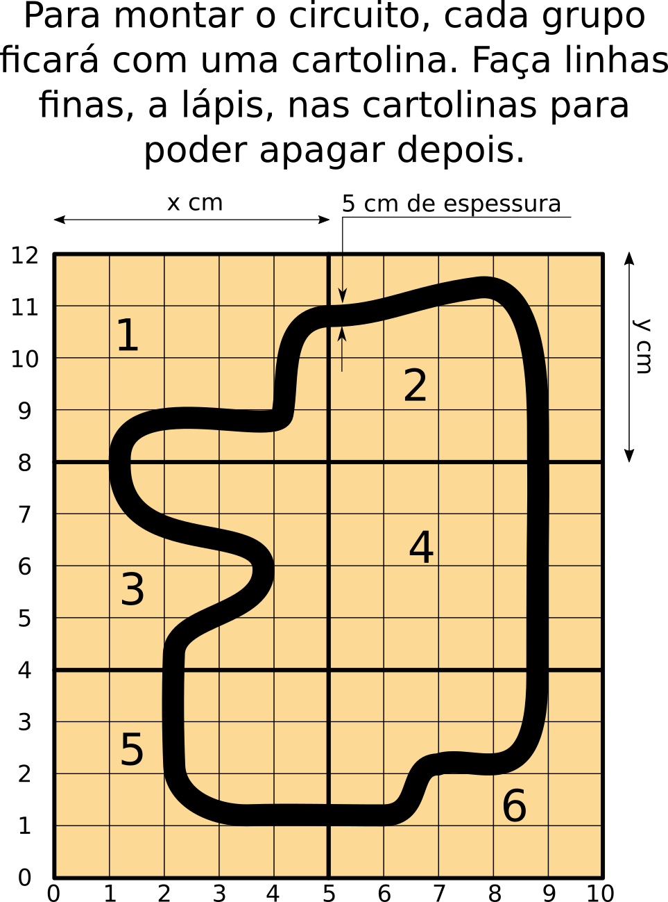

Vamos concluir a construção da pista de corrida.
A folha com o desenho da pista e o modo como desenharão a pista será apresentado pelo professor durante a aula. O professor também irá fornecer réguas para uso durante a aula, caso seja necessário.
Baixe a imagem em formato pdf caso queira imprimir esta folha.